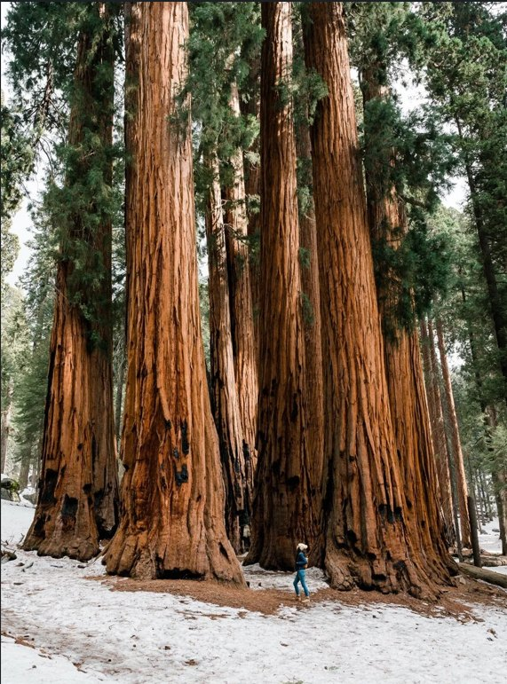

Sequoia
National Park
Sequoia protects the largest trees on the planet, and standing at the base of one is a strange experience, because there is nothing nearby to judge the scale against. The trunk stops reading as a tree and starts reading as a wall.
The park's most famous resident is the General Sherman Tree, roughly 275 feet tall and more than 36 feet across at the base, the largest single-stem tree on Earth by volume. Several more of the ten largest trees in the world stand within a short walk of it in the Giant Forest, and the loop trail through that grove is flat enough for almost anyone. Higher up, the road climbs to Moro Rock, a granite dome with a staircase cut into its side that opens onto the whole Great Western Divide.
What stayed with me was the quiet. The canopy is so far overhead that sound seems to vanish into it before it can come back down, and the whole forest floor smells like warm bark and dust. I still think about it whenever I smell anything close to that.
— Giant Forest, late afternoon